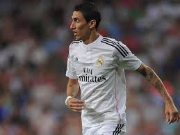

Real Madrid
![ 2010-2011 temporada debut Ángel Di María es un futbolista argentino que jugó para el Real Madrid desde 2010 hasta 2014. Durante su tiempo en el club, Di María destacó por su habilidad en el regate, velocidad y visión de juego. Fue un jugador clave en el equipo que ganó la Liga de Campeones de la UEFA en la temporada 2013-2014, así como en la conquista de la Liga española en la temporada 2011-2012. demostrando su calidad grandiosa atravez de sus abilidades y caracteristicas gracias a sus a habilidades como jugador siemre obtubo los mejores resultados en sus tiempos](assets/img/foto1.png){kind=link}
Ángel Di María es un futbolista argentino que jugó para el Real Madrid desde 2010 hasta 2014. Durante su tiempo en el club, Di María destacó por su habilidad en el regate, velocidad y visión de juego. Fue un jugador clave en el equipo que ganó la Liga de Campeones de la UEFA en la temporada 2013-2014, así como en la conquista de la Liga española en la temporada 2011-2012. demostrando su calidad grandiosa atravez de sus abilidades y caracteristicas gracias a sus a habilidades como jugador siemre obtubo los mejores resultados en sus tiempos
{kind=link}
Durante la temporada 2011-2012, Ángel Di María continuó siendo un jugador importante para el Real Madrid. Su velocidad, habilidad en el regate y su capacidad para crear oportunidades de gol lo convirtieron en una pieza clave en el equipo dirigido por José Mourinho. En esa temporada, el Real Madrid logró ganar la Liga española, poniendo fin a una racha de tres títulos consecutivos del Barcelona. Di María contribuyó con su juego dinámico y sus asistencias
{kind=link}
Durante la temporada 2015-2016, Ángel Di María jugó para el Real Madrid. Sin embargo, es importante destacar que esta información no es precisa, ya que Di María dejó el club en agosto de 2014 para unirse al Manchester United. , En la temporada 2014-2015, Di María tuvo un buen desempeño con el Manchester United, pero no fue hasta el verano de 2015 que se unió al Paris Saint-Germain (PSG), donde jugó durante las temporadas 2015-2016 y siguientes.
{kind=link}
Durante la temporada 2015-2016, Ángel Di María jugó para el Paris Saint-Germain (PSG), no para el Real Madrid. Fue traspasado al PSG en 2015 después de su temporada con el Manchester United. solo convirtió en una pieza clave del equipo. Durante la temporada 2015-2016, contribuyó con su velocidad, habilidad en el regate
{kind=link}
Durante la temporada 2017-2018, Ángel Di María continuó jugando para el Paris Saint-Germain (PSG) y no regresó al Real Madrid. En esta temporada, Di María continuó siendo una pieza importante en el equipo francés. En la Ligue 1, Di María contribuyó con su habilidad en el regate, visión de juego y capacidad goleadora. Ayudó al PSG a ganar el título de la liga francesa
{kind=link}
Ángel Di María, en la temporada 2022, ha sido una pieza clave en el Paris Saint-Germain (PSG) para llegar a la final de la UEFA Champions League. Su habilidad para desequilibrar en el campo, su velocidad y su visión de juego lo convierten en un jugador determinante en el ataque del equipo francés. Di María ha demostrado su calidad en los momentos importantes